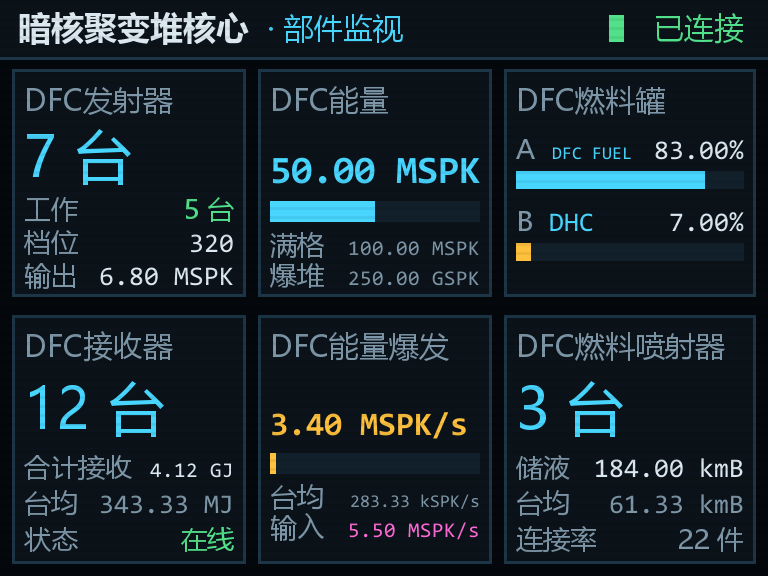
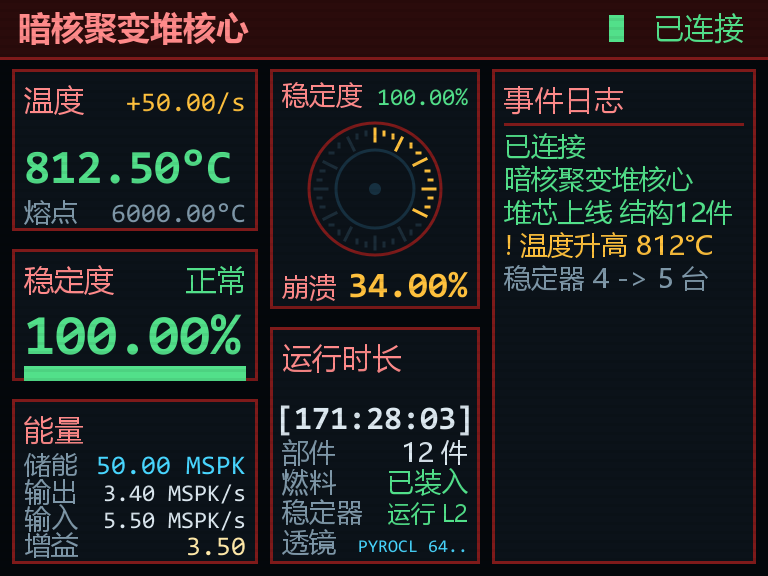
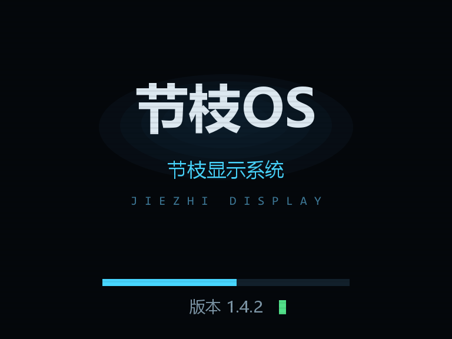
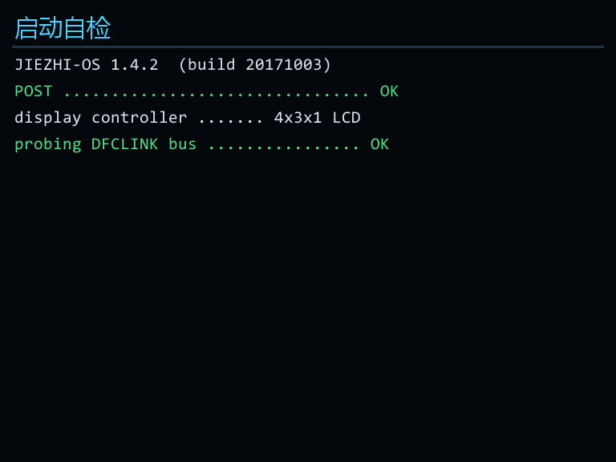
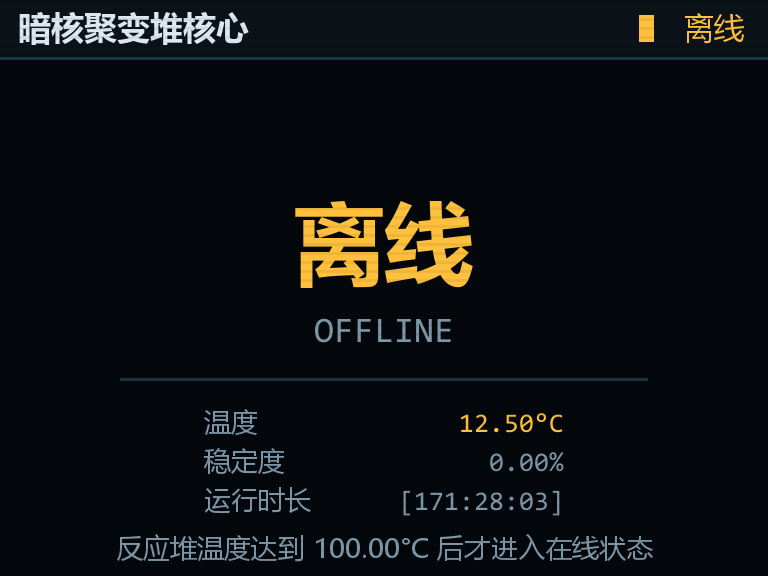

事件流程全自动化
开机自检 → 升温报警 → 稳定器失效 → 坍缩告警 → 错误 301 → 熔毁爆炸，全流程由地图事件驱动， 可重复播放、可中途接管，不需要玩家手动补红石。
Automation · Map Logic上游最新正式版 v3.6 前往下载中心 →
从升温、自检、临界到熔毁爆炸，整条暗核聚变堆事件流程被写进地图的时间轴，不再靠红石与命令方块硬凑。配合节枝特效工具 v3.6，抖屏、白屏震撼弹、字幕、倒计时与 4×3 实时监控大屏全部一条指令调用。
bilibili · BV1VRYe6gEga 11 分钟实机演示
这张地图面向 HBM 核科技诅咒版的 DFC（暗核聚变堆）机制：堆芯升温、稳定器投运、坍缩度攀升、爆炸倒计时， 每一阶段都有对应的屏幕读数、音效与镜头语言。工具负责表现，地图负责流程。
开机自检 → 升温报警 → 稳定器失效 → 坍缩告警 → 错误 301 → 熔毁爆炸，全流程由地图事件驱动， 可重复播放、可中途接管，不需要玩家手动补红石。
Automation · Map Logic核心页 / 部件页 / 自定义页三块屏幕共用同一套吊装多方块。崩溃圆盘、稳定度、事件日志、温度与熔点进度条， 全部按真实堆芯数据刷新。
Live Telemetry · Multiblock
/shake 抖屏、/white 白屏震撼弹、
/countdown_add 高精度倒计时、/notice 圆角公告卡片，
客户端渲染，不改存档结构。
对 HBM 核科技只做反射读取：装了就读数据，没装就显示 NO LINK，
不会因为缺失前置而崩档。服务端与客户端同装即可联机使用。
地图是完整整合包 .zip，工具是单独 .jar。
想只更新工具？只下 jar。想全量开新档？下整合包。互不干扰。
站点每 6 小时拉取一次上游 Release Tag，新版本发布后自动写入数据并触发 Cloudflare Pages 重新部署， 下载链接始终直指 Release 原始资产。
CI · Auto Sync完整流程实机演示 · B 站原片。点击播放将在当前页面内加载 B 站播放器。
以下全部为游戏内实际渲染画面，未做后期合成。点击任意一张可放大查看。









点击图片放大 · 支持 ← / → 键切换 · Esc 关闭
工具是 .jar，丢进 mods 就能用；地图是整合包 .zip，
解压即玩。版本号随上游 Release 自动更新，下面的按钮永远指向最新资产。
JiezhiMod · 客户端 + 服务端
jiezhi-1.12.2-dfcmaptools-3.6.jar
存档 + 配置 + 所需模组
.minecraft/saves 即可开档整合包资产发布后自动出现在这里
需要 Minecraft 1.12.2 + Forge 14.23.5.2864。
DFC 显示器相关功能需同时安装 HBM 核科技社区版与诅咒版 DFC 附加包；未安装时屏幕显示
NO LINK，不会崩溃。所有下载直连 GitHub Release，不经过第三方网盘。